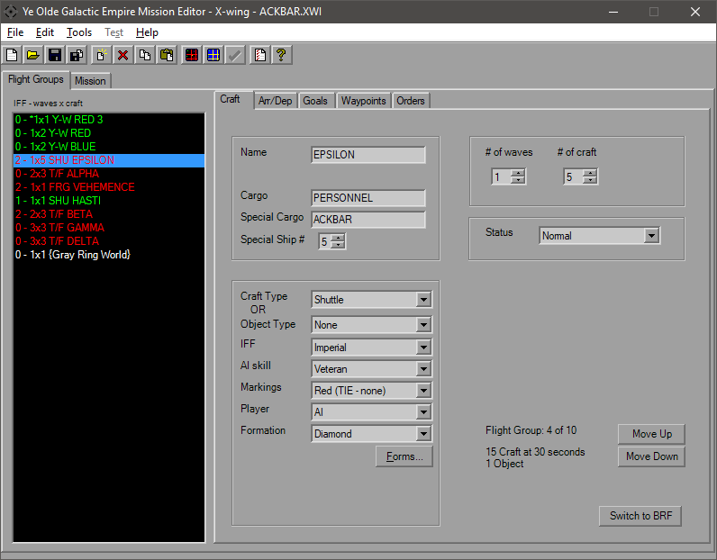
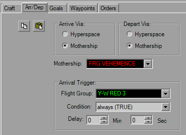
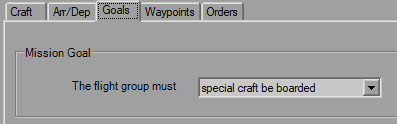
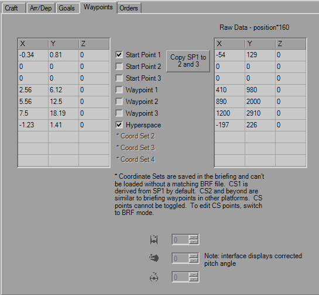
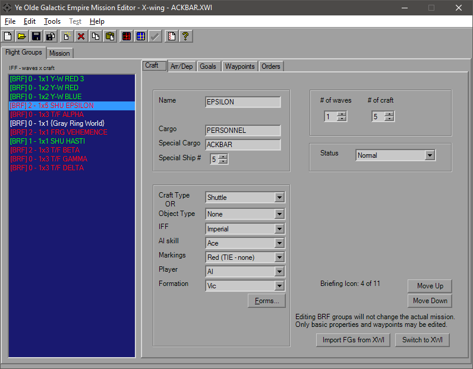
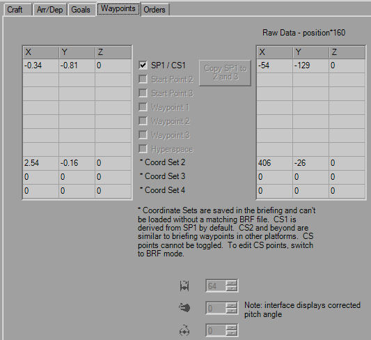

Flightgroups
When you start YOGEME and launch the XW95 platform you will be greeted by the FlightGroups-Craft tab.

This page includes most of the basic information for the given FlightGroup. On the left you have the list of FGs with a brief summary of their details. On the right you have several tabs to help find the settings you wish to edit. But for right now we're going to focus on here.
The ListBox on the left shows every single FG in the mission and is accessible from every FG tab. There is a maximum of 48 FlightGroups allowed in a mission file. Past that results in various corruptions. YOGEME will enforce this limit.
The ListBox gives you the IFF Index (shown as a number and color, since some ship types are auto-assigned IFFs), Number of Waves x Number of Craft, FG Name. The FG with an asterisk is the player's FG. Simply click on a FG to load that craft's settings.
The first group includes the craft Name and Cargos. These strings all have a maximum length of 12 that is enforced.
For Special Cargo to be activated, Special Ship# must be non-zero. Special Cargo replaces the normal Cargo for the indicated craft in the FG. This will also mark the craft as "Special" for use in triggers and goals.
The next group has several settings, from ship type, formation, etc.
IFF will determine who that craft belongs to and which color it appears as in the CMD. Note that XW, certain ship types are auto-assigned IFFs and don't necessarily need to be entered. In the image you can see that most of the TIEs and the Y-wings have the same "Default" IFF index, since it's pretty obvious who's side their on, however YOGEME and XW both know who they really belong to and YOGEME will color them appropriately.
For the Player value, use "AI" (zero) for AI controlled. The AI Skill value controls how smart the FG is. Veteran is usually a good value for an average ship. Markings will change the highlight markings for craft that support it, which usually means Fighters.
Formations are the layout of the FG. If you know what you want you can select it from the dropdown, or click the button to take you to the formations dialog.
The third group is the numbers box. # of Waves is how many times the group will spawn, minimum of 1. If you never want it to show up, use Arr/Dep controls. # of Craft controls how many ships spawn at a single time, maximum of 6 as the formations can begin to corrupt above that..
The final group has the Status parameter which lets you cut shields, only give half the warheads or a few other adjustments.
The last item of note for this tab is the "Flight Group # of #" string which is good for letting you know how close you are to the limit, as well is the "# Craft at 30 Seconds" string. This value will turn red if more than 28 craft will be present at the start of the mission or have simple Arrival delays that have the FG showing up within 30 seconds. This is your quick sanity check for the craft limit, it's up to you to ensure that this isn't exceeded for the rest of the mission. Any craft over 28 will not appear, this can break missions when those missing craft are mission-critical for destruction goals and others.

When the "Object Type" drop-down is used instead of "Craft Type", the Craft tab changes to reflect the fields that apply. There's not a lot to it and all but one of the waypoints (discussed later) are also disabled. The remaining fields don't have any tricks to them.

The Arrival and Departures tab controls when, how and if the FG shows up during the mission. In XW there is only a single Trigger that controls its arrival. The two buttons in the upper left should be pretty obvious that they're Copy and Paste buttons. These apply to the trigger itself. The trigger can be pasted into any trigger in the mission, likewise any trigger copied elsewhere can be pasted here.
The Mothership settings should be straight forward, craft will default to Hyperspace. You can select any FG in the mission to be a Mothership, even if they aren't equipped with a hangar. Forgetting to reassign the Mothership's FG can lead to amusing instances of large craft leaving the "hangar" of the first FG, which is usually the player, sending them tumbling, sometimes into tiny pieces.
FlightGroups will attempt the the first option (Via panel) when the trigger fires and will go to the Alternate when the primary Mothership is not in theater. If both condtions cannot be met, the FG will hang around either holding still or sometimes flying in a straight line forever, depending on their last order.
The Arrival Delay doesn't have any tricks to it; if the trigger is set it will delay after that firing, if there's no trigger (always TRUE) it will delay from the mission start.

For XW this doesn't even need to be its own tab, but has the Flightgroup-specific goal. There's only one goal that can be applied, and you can't adjust the points. So there you go.

Waypoints are the 3D grid coordinates which control initial placement, pathing layout among others. The left field will likely be the primary field of interest, as that one is in kilometers (klicks) which is what is used in-game. The right field is the raw data that is stored in the file, for when you're picky and you need to try and squeeze out a couple extra meters you lose from rounding. Each raw unit is 6.25 meters.
The checkboxes control whether or not the WPs are important. If you have multiple Start Points, theroretically it picks one at random (I say this as normally I only notice it using SP1). The Waypoints are used for craft with various "Patrol" or "Circle" orders, best used with capital ships or convoys that can't fly in a straight line. Hyperspace defines where the ship hypes in to and where it heads when it's hyping out. When a craft arrives via hyperspace, it will be oriented such that it will pass through HYP and be pointing towards SP1, even if SP1 isn't checked. This is important, so remember to set SP1 for craft with HYP otherwise you can collisions when multiple craft hyper in at the same time. Craft leaving have no orientation, then hype out when they hit that point.
The rotation fields with the T/I icons are disabled for all normal craft. They are only functional for space objects such as buoys and mines. If you're used to using different editors and adjusting the pitch angle, you know normally this value is 64 to counter the automatic nose-down that the flight engine automatically adds to all craft. That is the raw value. YOGEME displays this number corrected to degrees, so what you see as 64 in other editors will appears as 0 in YOGEME. Sometimes the conversion from 256 to 360 isn't perfect and it may slip a degree (44° will be 43°, but 45° will always be 45°). YOGEME is aware of that extra 90° and it will be added back into whatever value you choose. (Yes, this means if you put 64 here, the ship will pitch up about 64° instead of being "level")

Orders are much simpler in XW and you only have one orders to control FG behaviour, with only two targets for each. The top drop-down gives you the Order itself. The Copy and Paste buttons are for the individual order with all targets and settings.
The Dock Time / Throttle field is dual purpose; if the order is boarding/docking related it's used in that regard, otherwise it is the percent throttle.

X-wing is different form the other platforms in that the Briefing data is held in a separate file from the rest of the mission data. For this reason, there's a "Switch to BRF' button, which has the FGs that will be used in the Briefing. Usually it's the same as the mission list, so there's buttons available to just copy every over. Granted, several of the settings don't really mean anything (number of waves, for example) but they're there anyway.

The Waypoint tab also adjusts the available points to be used. The label there explains the Coord Sets.